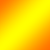
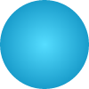
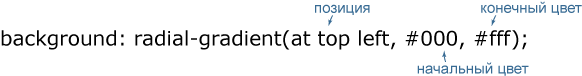
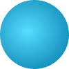
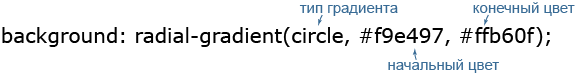
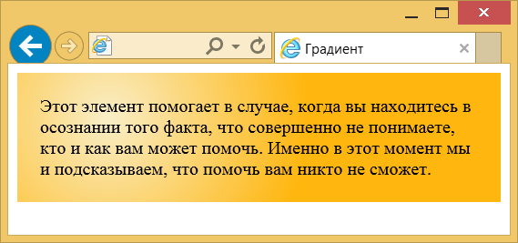
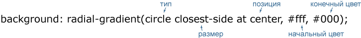
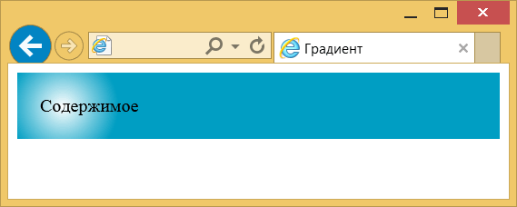
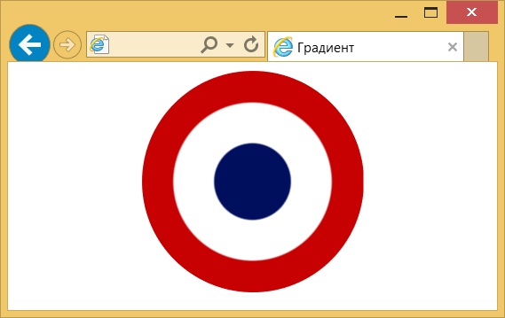

Радиальный градиент
Радиальные градиенты по своему принципу похожи на линейные, но один цвет переходит в другой не вдоль прямой линии, а словно круги по воде вокруг точки. На рис. 1 представлено для сравнения одновременно два разных градиента: радиальный (рис. 1а) и линейный (рис. 1б).
 |  |
| а | б |
Рис. 1. Радиальный и линейный градиент
Радиальный градиент создаётся с помощью свойства background или background-image с функцией radial-gradient(). В простейшем случае для задания радиального градиента понадобится всего два параметра: начальный и конечный цвет. По умолчанию, начальная точка располагается при этом в центре. В примере 1 показано создание некоторого подобия шарика, для этого используется радиальный градиент и свойство border-radius.
Пример 1. Градиент
<!DOCTYPE html>
<html>
<head>
<meta charset="utf-8">
<title>Градиент</title>
<style>
div {
height: 100px; width: 100px; /* Размеры */
border-radius: 50%; /* Превращаем в круг */
background: radial-gradient(#55ddff, #0081b5);
}
</style>
</head>
<body>
<div></div>
</body>
</html>Результат данного примера показан на рис. 1.

Рис. 2. Радиальный градиент
Начальную точку градиента можно задавать в любом месте элемента, для этого вначале указывается её позиция.

Позиция точки пишется аналогично значениям свойства background-position с помощью ключевых слов или доступных единиц измерения вроде пикселей или процентов; ниже приведены возможные сочетания.
- at top left = at left top = at 0% 0% (в левом верхнем углу);
- at top = at top center = at center top = at 50% 0% (по центру вверху);
- at right top = at top right = at 100% 0% (в правом верхнем углу);
- at left = at left center = at center left = at 0% 50% (по левому краю и по центру);
- at center = at center center = at 50% 50% (по центру) — это значение по умолчанию;
- at right = at right center = at center right = at 100% 50% (по правому краю и по центру);
- at bottom left = at left bottom = at 0% 100% (в левом нижнем углу);
- at bottom = at bottom center = at center bottom = at 50% 100% (по центру внизу);
- at bottom right = at right bottom = at 100% 100% (в правом нижнем углу).
Если задать позицию начальной точки для примера 1 как at 40px 45px, а второй цвет сделать несколько темнее (#0076a5), то получится чуть более реалистичный шарик (рис. 3).

Рис. 3. Изменение начальной точки градиента
Возможны две формы радиального градиента — круг (circle) и эллипс (ellipse), которые различаются своим видом. По умолчанию устанавливается эллиптический градиент.

Разница между круговым и эллиптическим градиентом для цветов #f9e497 и #ffb60f продемонстрирована на рис. 4.
а. круговой градиент (значение circle)
б. эллиптический градиент (значение ellipse)
Рис. 4. Разные виды градиента
Для элемента, у которого ширина равна высоте, как в примере с шариком, разница между типами градиента будет незаметна.
В примере 2 показано создание кругового градиента с заданной начальной точкой. Для усиления контрастности между цветами используется три значения цвета, а не два.
Пример 2. Круговой градиент
<!DOCTYPE html>
<html>
<head>
<meta charset="utf-8">
<title>Градиент</title>
<style>
div {
background: radial-gradient(circle at 80px 40px, #f9eec7, #ffb60f, #ffb60f);
padding: 20px;
}
</style>
</head>
<body>
<div>Этот элемент помогает в случае, когда вы находитесь в осознании того
факта, что совершенно не понимаете, кто и как вам может помочь. Именно
в этот момент мы и подсказываем, что помочь вам никто не сможет.
</div>
</body>
</html>Обратите внимание на синтаксис, если мы хотим сочетать форму градиента с указанием начальной точки, то вначале идёт ключевое слово circle, а потом уже через пробел позиция. Результат данного примера показан на рис. 5.

Рис. 5. Круговой градиент
Наряду с типом градиента можно задавать и его размер, который зависит от применяемых ключевых слов. Размер пишется через пробел после типа градиента (circle или ellipse).

В табл. 1 перечислены возможные значения размера с их описанием и результатом для белого и чёрного цвета. Код и вид дан для кругового и эллиптического градиента.
| Значение | Код | Описание | Вид |
|---|---|---|---|
| closest-side | background: radial-gradient(circle closest-side at 30px 20px, #fff, #000); background: radial-gradient(ellipse closest-side at 30px 20px, #fff, #000); | Форма градиента совпадает с ближайшей к нему стороной блока. | |
| closest-corner | background: radial-gradient(circle closest-corner at 30px 20px, #fff, #000); background: radial-gradient(ellipse closest-corner at 30px 20px, #fff, #000); | Форма градиента вычисляется на основании информации о расстоянии до ближайшего угла блока. | |
| farthest-side | background: radial-gradient(circle farthest-side at 30px 20px, #fff, #000); background: radial-gradient(ellipse farthest-side at 30px 20px, #fff, #000); | Градиент распространяется до дальней стороны блока. | |
| farthest-corner | background: radial-gradient(circle farthest-corner at 30px 20px, #fff, #000); background: radial-gradient(ellipse farthest-corner at 30px 20px, #fff, #000); | Форма градиента вычисляется на основании информации о расстоянии до дальнего угла блока, |
Для центральной начальной точки градиенты вроде closest-corner и farthest-side совпадают. Но градиенты будут различаться, если установить начальную точку в углу. В примере 3 используется значение closest-corner с заданием начальной точки в пикселях.
Пример 3. Размер градиента
<!DOCTYPE html>
<html>
<head>
<meta charset="utf-8">
<title>Градиент</title>
<style>
div {
background: radial-gradient(circle closest-corner at 40px 30px, #fff, #009ec3);
padding: 20px;
}
</style>
</head>
<body>
<div>Содержимое</div>
</body>
</html>Результат данного примера показан на рис. 6.

Рис. 6. Использование значения closest-corner
Подобно линейному градиенту можно указывать несколько цветов, устанавливать их позицию и делать резкие переходы между цветами. Для этого произвольное количество цветов перечисляется через запятую, а после значения цвета через пробел идёт его позиция, которая может быть задана в пикселях или процентах. Крайние значения 0% и 100% можно не писать, они подразумеваются автоматически.
Резкие переходы получаются, когда позиция одного цвета совпадает с позицией другого, как показано в примере 4. Разница в один процент сделана, чтобы немного сгладить переход, иначе получается «лесенка» из пикселей, что смотрится не очень красиво.
Пример 4. Резкие переходы
<!DOCTYPE html>
<html>
<head>
<meta charset="utf-8">
<title>Градиент</title>
<style>
.french {
width: 200px; height: 200px; /* Размеры */
border-radius: 50%; /* Превращаем в круг */
margin: auto; /* Выравниваем по центру */
background: radial-gradient(circle at center,
#000e5e 24%, #fff 25%, #fff 50%, #c70102 51%, #c70102);
}
</style>
</head>
<body>
<div class="french"></div>
</body>
</html>Результат данного примера показан на рис. 7.

Рис. 7. Резкие переходы между разными цветами